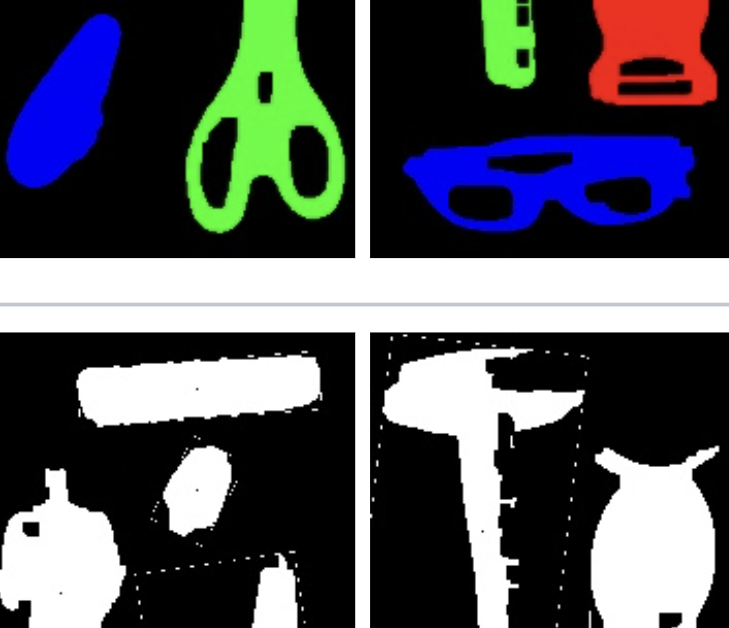
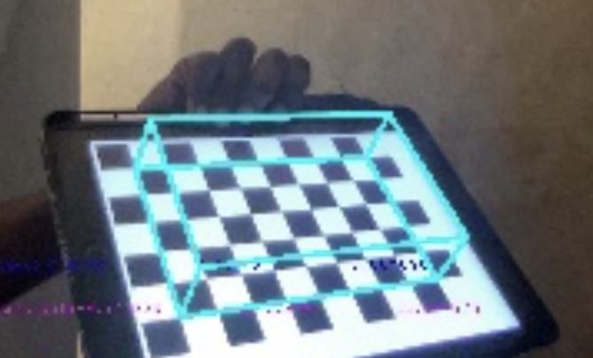
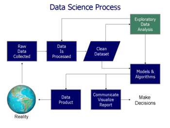

Hello World!!!, I'm
Ashwin Unnikrishnan
Trying to use Machine Learning to Solve Problems


Hello World!!!, I'm
Trying to use Machine Learning to Solve Problems
Get To Know More

Machine Learning: 3+ years
Software Development: 4+ years

B.Tech Computer Science
M.S Artificial Intelligence
I have a quirky passion for tackling real-world challenges, streamlining operations, and conjuring up innovative concepts to address familiar issues. This is precisely why I have a soft spot for bouldering, where problem-solving takes center stage. I'm ever eager to engage in lively discussions, offering constructive criticism to enhance and refine any given project.
Machine Learning Engineer ( Computer Vision )
Senior Software Engineer ( Python Developer, ML Engineer)
Browse My Recent
Stereo VisionDepth estimation using simple stereo involves capturing images of the same scene from two slightly offset cameras and then calculating the disparity between corresponding points in the two images to determine the scene's depth information. |

Social Media ClassifierThe crux of the entrepreneurial project is to create a user-friendly tool that categorizes profiles into various sections such as Sports, Food, Travel, etc., facilitating efficient profile tracking for both content creators and followers, ultimately saving valuable time. |

California Housing PriceThe project aims to analyze California's housing market data to predict and understand housing price trends and factors influencing them. |
EmoSense: Empathetic Emotion AnalysisUtilized transfer learning techniques to construct a real-time emotion detection tool designed to enhance comprehension of individuals' emotions in various scenarios, including therapy, interviews, and other applications. |
Content Based Image RetrievalDesigned a basic image similarity search system in C++ with filter and histogram matching techniques to gain insights into filter operations within larger models, despite not achieving state-of-the-art performance. |

MNIST and Greek Symbol RecognitionCreated a straightforward image similarity search system utilizing C++ with filter and histogram matching techniques. Although not state-of-the-art in terms of performance, this project offers valuable insights into the operation of filters within complex models while maintaining computational efficiency. |
|

Simplified Custom Object DetectionConstructed a collection of ten distinct object categories, each consisting of 10 curated images. Employed fundamental image processing filters to facilitate object detection within this tailored dataset. |

Real Time FilteringCreated different filters to add effects in live video, created filters like cartooning, flash effect, black & white, ghost etc. |

Augmented RealityTo calibrate a camera and then use the calibration to generate virtual objects in a scene. The end result should be a program that can detect a target and then place a virtual object in the scene relative to the target that moves and orients itself correctly given motion of the camera or target. |
Text-to-Image:Stable DiffusionEmploying Hugging Face's pretrained stable diffusion models for image generation while dissecting the process of how the desired image is crafted across various timestamps. |
Denoising Autoencoders MNISTExploring the workings of Hugging Face's pretrained Denoising Autoencoder models, with a focus on understanding the denoising process and examining the model's output at various training epochs. |
Generating Synthetic Images : Denoising AutoencodersExploring the workings of Hugging Face's pretrained Denoising Autoencoder models, for generating synthetic data from given dataset. This uses MNIST data to learn and generate new images. |
PACMAN : Different RL algorithms with GUIThis project delves into PACMAN algorithms—Search (DFS, BFS, A*), Multi-agent Search (Min-Max, Alpha-Beta Pruning), and Reinforcement Learning (Value iteration, Q-Learning)—to evaluate their impact on game performance. |
Open AI Gym based GamesGYM AI project, I navigate through diverse game environments, employing reinforcement learning to train agents to outsmart the system and emerge victorious in the games. |

Movie Recommendation SystemDeveloped a movie recommendation system using cosine similarity and TF-IDF techniques to provide personalized film suggestions based on user preferences and content similarity. |
EmoTalk:Sentiment Analysis on Audio Text DataBuilt a sentiment analysis system tailored for audio text data, allowing for the automated extraction of emotional insights from spoken content. |

Boston Weather PredictionDeveloped a Boston weather prediction model using XGBoost algorithms to provide accurate and real-time weather forecasts for the Boston area. |
Sentence BERT and TAPAS based Question AnswerWas exploring about Sentence Bert and TAPAS, this project is for that. Convert all the tables into vector space using Sentence BERT and based on the question fetches tables from the vector space and then we make use of TAPAS to fetch the answer for question. |

Stock Market ApplicationUsing Agile methodology created this stock market application in JAVA. Every week new features was requested and strict rule to reuse code and have good design pattern in place. Scored 100/100 for the whole execution. |

Streamlit Based Quick EDA ToolIsn't doing eda a tough task, write code for each and every step. What if there was something easier a system where you could upload data, it gives you a generic EDA, and also helps train a model based on you choice of target variable. |
Get in Touch